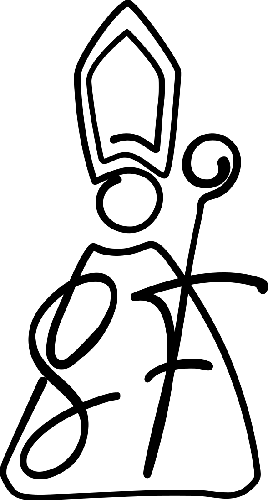

Información legal
Transparencia y confianza forman parte de nuestra forma de trabajar. Aquí encontrarás toda la información legal relacionada con nuestros servicios.
Aviso legal
En cumplimiento con el deber de información recogido en la normativa vigente, se informa que el presente sitio web es titularidad de:
- Nombre comercial:

Vive San Fermin desde dentro - Titular: Paula Díaz Echalecu
- NIF/CIF: 72694758S
- Domicilio: C/ Adela Bazo 2, 2G, 31006 Pamplona (Navarra), España
- Email de contacto: paula@experienciasanfermin.com
Independencia comercial y propiedad industrial
Cláusula de independencia y exclusión de asociación: El titular de este sitio web informa expresamente de que vivesanfermin.com es una plataforma de servicios turísticos y gestión de experiencias de carácter privado e independiente.Se hace constar que no existe vinculación jurídica, comercial, editorial ni de patrocinio con la Corporación de Radio y Televisión Española (RTVE) ni con el espacio televisivo o marca de programa titulado "Vive San Fermín". El uso de la denominación "Vive San Fermín" en este dominio y sus contenidos se realiza con carácter meramente descriptivo de la actividad (experiencias en las fiestas de San Fermín) y se diferencia visualmente mediante un logotipo de creación artística propia y original.El titular no pretende en ningún caso inducir a error al usuario ni aprovecharse del renombre de terceras marcas, limitando su responsabilidad a la prestación de servicios de alojamiento y ocio descritos en la web.
Propiedad Intelectual e Industrial: Todos los contenidos de este sitio web, incluyendo a título enunciativo pero no limitativo: textos, gráficos, interfaces, así como los diseños exclusivos de la línea ©To-Ko Collection (ilustraciones de gigantes, kilikis y motivos festivos aplicados a textil, papelería o productos promocionales) y el logotipo identificativo (silueta artística de San Fermín con las iniciales "SF"), son propiedad exclusiva de Paula Díaz Echalecu.
Estas creaciones son obras originales protegidas por la Ley de Propiedad Intelectual. Queda estrictamente prohibida cualquier reproducción, distribución, transformación o comunicación pública, total o parcial, de dichos diseños y logotipos con fines comerciales sin la autorización expresa y por escrito del titular. El uso no autorizado de estos activos constituye una infracción de los derechos de propiedad intelectual y podrá dar lugar a las acciones legales pertinentes.
El acceso y uso de esta web atribuye la condición de usuario, implicando la aceptación plena de las condiciones aquí reflejadas.
El titular se reserva el derecho de modificar en cualquier momento la información contenida en el sitio web.
Política de privacidad
La presente política describe cómo se recogen y tratan los datos personales de los usuarios a través de este sitio web.
Responsable del tratamiento
Vive San Fermin desde dentro / Paula Díaz Echalecu
Finalidad del tratamiento
- Gestionar solicitudes de información o contacto
- Atender consultas relacionadas con nuestros servicios
- Mejorar la experiencia de usuario
Legitimación
La base legal para el tratamiento es el consentimiento del usuario.
Conservación de datos
Los datos se conservarán durante el tiempo necesario para cumplir con la finalidad para la que se recabaron.
Derechos del usuario
El usuario puede ejercer sus derechos de acceso, rectificación o supresión contactando a través del email indicado.
Política de cookies
Este sitio web utiliza cookies analíticas de terceros para conocer cómo los usuarios interactúan con el contenido, con el único fin de mejorar el servicio. No se utilizan cookies publicitarias ni se ceden datos a terceros con fines comerciales.
Cookies utilizadas
- Google Analytics (GA4): mide el número de visitas, páginas consultadas y comportamiento general de navegación de forma anónima. Las cookies que instala son
_ga,_ga_L44JNZMWQRy_gid. Los datos se almacenan en servidores de Google y se rigen por su política de privacidad.
Base legal
La instalación de cookies analíticas requiere tu consentimiento previo, de acuerdo con el RGPD (Reglamento UE 2016/679) y la LSSI-CE. Google Analytics no se carga hasta que aceptas expresamente desde el aviso que aparece al visitar el sitio por primera vez.
Gestión y retirada del consentimiento
Puedes aceptar o rechazar las cookies analíticas en cualquier momento usando el enlace Gestionar cookies situado en el pie de página. Tu preferencia se recuerda durante 90 días; transcurrido ese plazo se te preguntará de nuevo.
También puedes eliminar las cookies ya instaladas desde la configuración de tu navegador o instalar la extensión de exclusión de Google Analytics.